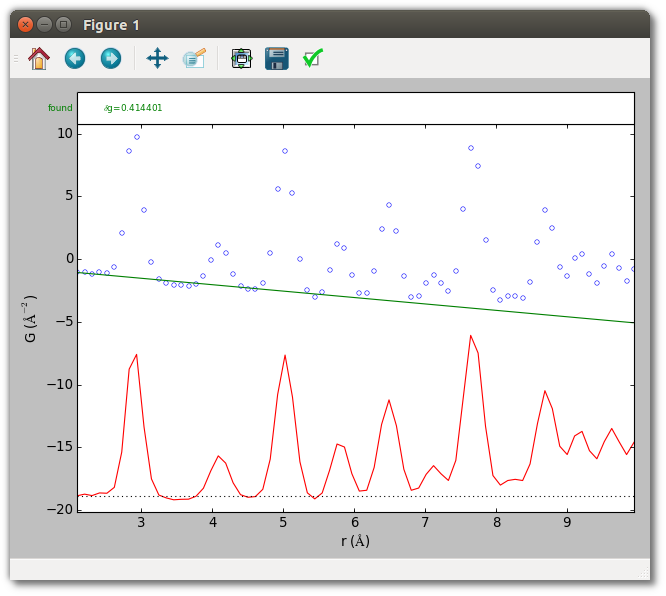
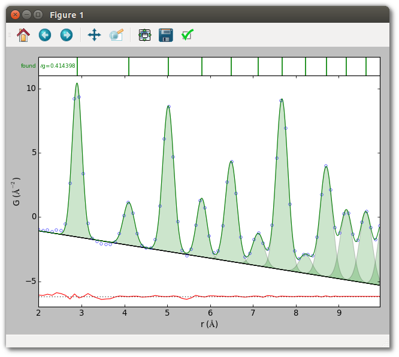
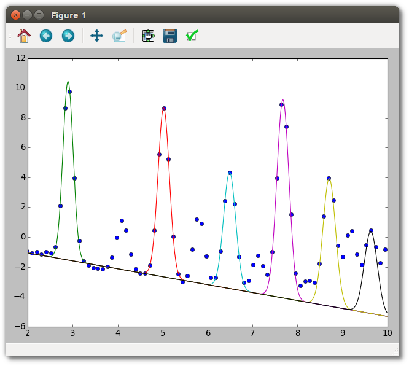

Querying SrMise results
In previous examples the results of peak extraction/fitting were read from the console, but this is not always convenient. This example demonstrates the basic methods for querying SrMise objects about their parameters and values within scripts.
First, visually check that the baseline obtained in the earlier silver example
(set using the --bsrmise filename.srmise option) is reasonable over a
larger range.
srmise data/Ag_nyquist_qmax30.gr --no-extract --plot --range 2 10
--bsrmise output/query_results.srmise

Next, run
python query_results.py
to perform peak extraction, the example analysis, and obtain the two plots below.


Now the methods of the script are described. The way to evaluate model
uncertainties with SrMise is with a ModelCovariance instance returned after
peak extraction (or fitting).
cov = ppe.extract()
Model parameters denoted by a tuple (i,j), representing the jth
parameter of the ith peak, are passed to this object’s methods. For a
Gaussian over r, the order of peak parameters in SrMise is position, width, and
area. Thus, the area of the nearest-neighbor peak is denoted by the tuple
(0,2). (Indexing is zero-based.) By convention, the last element (i=-1) is
the baseline. The methods of greatest interest are as follows.
# Get (value, uncertainty) tuple for this parameter
cov.get((i,j))
# Get just the value of the parameter
cov.getvalue((i,j))
# Get just the uncertainty of the parameter
cov.getuncertainty((i,j))
# Get the covariance between two parameters
cov.getcovariance((i1,j1), (i2,j2))
# Get the correlation between two parameters
cov.getcorrelation((i1,j1), (i2,j2))
Suppose, for example, one wants to emperically estimate the number of silver atoms contributing to each occupied coordination shell of the FCC structure, knowing that the coordination number (i.e. nearest neighbors) of an ideal FCC structure is exactly 12. For a monoelemental material the intensity of a peak in a properly normalized PDF should equal the number of contributing atoms in the corresponding shell. Thus, the intensity of the nearest neighbor peak permits an estimate of the PDF scale factor, and using that an estimate of other shell’s occupancy. This simple procedure is implemented in the script using model parameters and uncertainties obtained with the methods above.
Another useful capability is calculating the value of a model, in whole or
part. Given a PDFPeakExtraction instance ppe and a numpy array r, the
usual methods are
# Return sum of peaks and baseline, evaluated on the current grid, or r.
ppe.extracted.value()
ppe.extracted.value(r)
# Return residual (data - model) on the current grid.
ppe.extracted.residual()
# Return the baseline evaluated on the current grid, or r.
ppe.extracted.valuebl()
ppe.extracted.valuebl(r)
# The ith peak evaluated on r
ppe.extracted.model[i].value(r)
# The baseline evaluated on r
ppe.extracted.baseline.value(r)
Script (query_results.py)
#!/usr/bin/env python
##############################################################################
#
# diffpy.srmise by Luke Granlund
# (c) 2015 trustees of the Michigan State University.
# All rights reserved.
#
# File coded by: Luke Granlund
#
# See LICENSE.txt for license information.
#
##############################################################################
"""Example of extracting multiple peaks and accessing results programatically.
This example shows how to extract a range of peaks from a simple crystalline
PDF using a crystalline baseline obtained from an existing trial. It shows
how to access the value and uncertainty of peak parameters, including
transforming between different peak parameterizations. Finally, it shows how
to evaluate the model on an arbitrary grid.
The peaks extracted by this script are equivalent to those obtained running
srmise data/Ag_nyquist_qmax30.gr --range 2. 10. \
--bsrmise output/extract_single_peak.srmise \
--save output/query_results.srmise \
--pwa output/query_results.pwa --plot
at the command line.
"""
import matplotlib.pyplot as plt
import numpy as np
from diffpy.srmise.modelcluster import ModelCovariance
from diffpy.srmise.pdfpeakextraction import PDFPeakExtraction
def run(plot=True):
# Initialize peak extraction
# Create peak extraction object
ppe = PDFPeakExtraction()
# Load the PDF from a file
ppe.loadpdf("data/Ag_nyquist_qmax30.gr")
# Obtain baseline from a saved diffpy.srmise trial. This is not the
# initial baseline estimate from the previous example, but the baseline
# after both it and the extracted peaks have been fit to the data.
ppebl = PDFPeakExtraction()
ppebl.read("output/extract_single_peak.srmise")
baseline = ppebl.extracted.baseline
# Set up extraction parameters.
# Peaks are extracted between 2 and 10 angstroms, using the baseline
# from the isolated peak example.
kwds = {}
kwds["rng"] = [2.0, 10.0]
kwds["baseline"] = baseline
# Apply peak extraction parameters.
ppe.setvars(**kwds)
# Perform peak extraction, and retain object containing a copy of the
# model and the full covariance matrix.
cov = ppe.extract()
print("\n======= Accessing SrMise Results ========")
# Accessing results of extraction
#
# Model parameters are organized using a nested structure, with a list
# of peaks each of which is a list of parameters, similar to the the
# following schematic.
# Peak
# Position
# Width
# Area
# Peak
# Position
# Width
# Area*
# ...
# Baseline
# Slope
# Intercept
# By convention, the baseline is the final "peak." The ModelCovariance
# object returned by extract() can return information about any peak by
# using the appropriate tuple of indices (i,j). That is, (i,j) denotes
# the jth parameter of the ith peak. For example, the starred parameter
# above is the area (index = 2) of the next nearest neighbor (index = 1)
# peak. Thus, this parameter can be referenced as (1,2). Several examples
# are presented below.
print("\n------ Parameter values and uncertainties ------")
# ModelCovariance.get() returns a (value, uncertainty) tuple for a given
# parameter. These are the results for the nearest-neighbor peak.
p0 = cov.get((0, 0))
w0 = cov.get((0, 1))
a0 = cov.get((0, 2))
print("Nearest-neighbor peak: ")
print(" position = %f +/- %f" % p0)
print(" width = %f +/- %f" % w0)
print(" area = %f +/- %f" % a0)
print(" Covariance(width, area) = ", cov.getcovariance((0, 1), (0, 2)))
# Baseline parameters. By convention, baseline is final element in cov.
(slope, intercept) = cov.model[-1]
print("\nThe linear baseline B(r)=%f*r + %f" % tuple(par for par in cov.model[-1]))
print("\n ------ Uncertainties from a Saved File --------")
# A .srmise file does not save the full covariance matrix, so it must be
# recalculated when loading from these files. For example, here is the
# nearest-neighbor peak in the file which we used to define the initial
# baseline.
cov2 = ModelCovariance()
ppebl.extracted.fit(fitbaseline=True, cov=cov2, cov_format="default_output")
p0_saved = cov2.get((0, 0))
w0_saved = cov2.get((0, 1))
a0_saved = cov2.get((0, 2))
print("Nearest-neighbor peak:")
print(" position = %f +/- %f" % p0_saved)
print(" width == %f +/- %f" % w0_saved)
print(" area = = %f +/- %f" % a0_saved)
print(" Covariance(width, area) = ", cov2.getcovariance((0, 1), (0, 2)))
print("\n ---------- Alternate Parameterizations ---------")
# Different Parameterizations
# Peaks and baselines may have equivalent parameterizations that are useful
# in different situations. For example, the types defined by the
# GaussianOverR peak function are:
# "internal" - Used in diffpy.srmise calculations, explicitly enforces a
# maximum peak width
# "pwa" - The position, width (full-width at half-maximum), area.
# "mu_sigma_area" - The position, width (the distribution standard
# deviation sigma), area.
# "default_output" - Defines default format to use in most user-facing
# scenarios. Maps to the "pwa" parameterization.
# "default_input" - Defines default format to use when specifying peak
# parameters. Maps to the "internal" parameterization.
# All diffpy.srmise peak and baseline functions are required to have the
# "internal", "default_output", and "default_input" formats. In many
# cases, such as polynomial baselines, all of these are equivalent.
#
# Suppose you want to know peak widths in terms of the standard deviation
# sigma of the Gaussian distribution. It is then appropriate to convert
# all peaks to the "mu_sigma_area" format. Valid options for the "parts"
# keyword are "peaks", "baseline", or a sequence of indices (e.g. [1,2,3]
# would transform the second, third, and fourth peaks). If the keyword
# is omitted, the transformation is attempted for all parts of the fit.
cov.transform(in_format="pwa", out_format="mu_sigma_area", parts="peaks")
print("Width (sigma) of nearest-neighbor peak: %f +/- %f" % cov.get((0, 1)))
print("\n ------------ Highly Correlated Parameters ------------")
# Highly-correlated parameters can indicate difficulties constraining the
# fit. This function lists all pairs of parameters with an absolute value
# of correlation which exceeds a given threshold.
print("|Correlation| > 0.9:")
print("par1 par2 corr(par1, par2)")
print("\n".join(str(c) for c in cov.correlationwarning(0.9)))
print("\n-------- Estimate coordination shell occupancy ---------")
# Estimate the scale factor and its uncertainty from first peak's intensity.
# G_normalized = scale * G_observed
# dscale = scale * dG_observed/G_observed
scale = 12.0 / a0[0]
dscale = scale * a0[1] / a0[0]
print("Estimate scale factor assuming nearest-neighbor intensity = 12")
print("Scale factor is %f +/- %f" % (scale, dscale))
# Reference for number of atoms in coordination shells for FCC.
# http://chem-faculty.lsu.edu/watkins/MERLOT/cubic_neighbors/cubic_near_neighbors.html
ideal_intensity = [12, 6, 24, 12, 24, 8, 48, 6, 36, 24, 24, 24]
# Calculated the scaled intensities and uncertainties.
intensity = []
for i in range(0, len(cov.model) - 1):
(area, darea) = cov.get((i, 2))
area *= scale
darea = area * np.sqrt((dscale / scale) ** 2 + (darea / area) ** 2)
intensity.append((ideal_intensity[i], area, darea))
print("\nIntensity")
print("Ideal: Estimated")
for i in intensity:
print("%i: %f +/- %f" % i)
print("\nTotal intensity")
# It is possible to iterate over peaks directly without using indices.
# In addition, peak parameters can be accessed using string keys. For the
# Gaussian over r all of "position", "width", and "area" are valid.
total_observed_intensity = 0
total_ideal_intensity = 0
for peak, ii in zip(cov.model[:-1], ideal_intensity):
total_observed_intensity += scale * peak["area"]
total_ideal_intensity += ii
print("Ideal: Observed (using estimated scale factor)")
print("%i: %f" % (total_ideal_intensity, total_observed_intensity))
# Save output
ppe.write("output/query_results.srmise")
ppe.writepwa("output/query_results.pwa")
# Evaluating a model.
# Although the ModelCovariance object is useful, the model used for fitting
# can be directly accessed through PDFPeakExtraction as well, albeit
# without uncertainties. This is particularly helpful when evaluating a
# model since the parameters stay in the "internal" format used for
# calculations. For example, here we plot the data and every second peak
# on an arbitrary grid. Unlike with ModelCovariance, the baseline and
# peaks are kept separate.
if plot:
plt.figure()
grid = np.arange(2, 10, 0.01)
bl = ppe.extracted.baseline
everysecondpeak = ppe.extracted.model[::2]
plt.plot(ppe.x, ppe.y, "o")
for peak in everysecondpeak:
plt.plot(grid, bl.value(grid) + peak.value(grid))
plt.xlim(2, 10)
plt.show()
if __name__ == "__main__":
run()